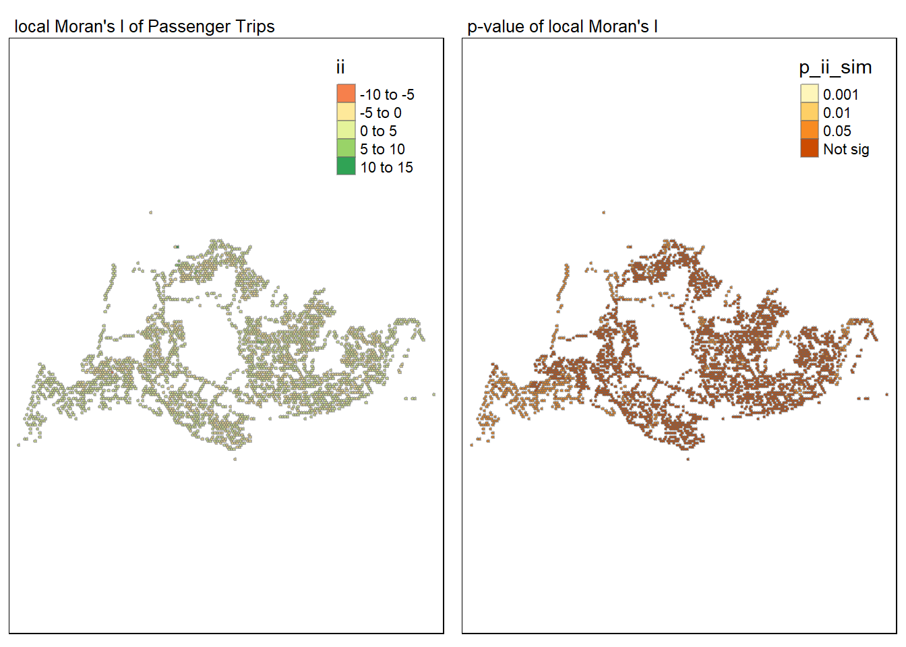
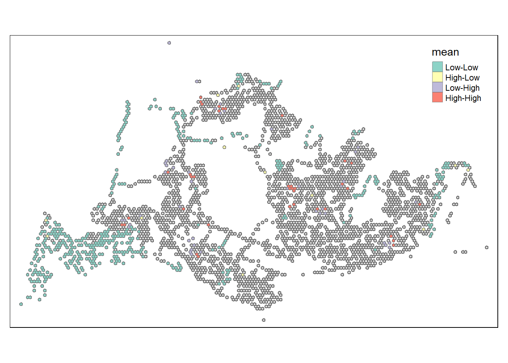

pacman::p_load(tmap, sf, tidyverse, knitr, spdep, sfdep, plotly, zoo, Kendall)Take-home_Ex1
Introduction
The success of Singapore’s public transport is commonly recognised as 1 of the quintessential indicator of its rapid growth and prosperity since her independence in 1965. It comprises of both public buses as well as mass rapid transport (MRT) trains. While the MRT network has been expanding across the many zones within Singapore, the bus network remains the most option accessible and reliable option amongst the two.
Thus, the utilisation pattern of buses are of key importance to multiple aspects of Singapore’s socio-economic spheres, ranging from areas of work productivity and efficiency, environmental impact, tourism, and even to potential impact to cost of living and real estate development; which underpins the impetus of this exercise to gain a better understanding of the utilisation patterns and characteristics of Singapore’s bus stops.
Objectives
The key objectives of this exercise are:
- To perform geovisualisation and analysis of peakhour busstop passenger trips
- To perform Analysis of Local Indicators of Spatial Association (LISA) for passenger trips
Getting Started
The code chunk below load the following packages:
- tmap: for thematic mapping
- sf for geospatial data handling
- tidyverse for non-spatial data handling.
- knitr for creating html table
- spdep
- sfdep for creating an sf and tidyverse friendly interfaceas well as for introducing new functionality that is not present in spdep
- plotly for interactive plots
Importing and preparing the Base Geospatial and Aspatial Data
Aspatial data
Firstly, the Passenger Volume by Origin Destination Bus Stops data set for the month of October 2023, from LTA DataMall, will be imported by using ‘read_csv()’ of **readr* package.
#\| eval: false
odbus <- read.csv("data/aspatial/origin_destination_bus_202310.csv")From below, the values in OROGIN_PT_CODE and DESTINATON_PT_CODE odbus in the tibble data frame are in numeric data type.
glimpse(odbus)Rows: 5,694,297
Columns: 7
$ YEAR_MONTH <chr> "2023-10", "2023-10", "2023-10", "2023-10", "2023-…
$ DAY_TYPE <chr> "WEEKENDS/HOLIDAY", "WEEKDAY", "WEEKENDS/HOLIDAY",…
$ TIME_PER_HOUR <int> 16, 16, 14, 14, 17, 17, 17, 7, 14, 14, 10, 20, 20,…
$ PT_TYPE <chr> "BUS", "BUS", "BUS", "BUS", "BUS", "BUS", "BUS", "…
$ ORIGIN_PT_CODE <int> 4168, 4168, 80119, 80119, 44069, 20281, 20281, 190…
$ DESTINATION_PT_CODE <int> 10051, 10051, 90079, 90079, 17229, 20141, 20141, 1…
$ TOTAL_TRIPS <int> 3, 5, 3, 5, 4, 1, 24, 2, 1, 7, 3, 2, 5, 1, 1, 1, 1…Using appropriate tidyverse functions to convert these data values into factor data type.
odbus$ORIGIN_PT_CODE <- as.factor(odbus$ORIGIN_PT_CODE)
odbus$DESTINATION_PT_CODE <- as.factor(odbus$DESTINATION_PT_CODE)From below, the values in OROGIN_PT_CODE and DESTINATON_PT_CODE odbus in the tibble data frame are now in factor data type.
glimpse(odbus)Rows: 5,694,297
Columns: 7
$ YEAR_MONTH <chr> "2023-10", "2023-10", "2023-10", "2023-10", "2023-…
$ DAY_TYPE <chr> "WEEKENDS/HOLIDAY", "WEEKDAY", "WEEKENDS/HOLIDAY",…
$ TIME_PER_HOUR <int> 16, 16, 14, 14, 17, 17, 17, 7, 14, 14, 10, 20, 20,…
$ PT_TYPE <chr> "BUS", "BUS", "BUS", "BUS", "BUS", "BUS", "BUS", "…
$ ORIGIN_PT_CODE <fct> 4168, 4168, 80119, 80119, 44069, 20281, 20281, 190…
$ DESTINATION_PT_CODE <fct> 10051, 10051, 90079, 90079, 17229, 20141, 20141, 1…
$ TOTAL_TRIPS <int> 3, 5, 3, 5, 4, 1, 24, 2, 1, 7, 3, 2, 5, 1, 1, 1, 1…Geospatial data
Import BusStop layer downloaded from LTA DataMall into RStudio and save it as a sf data frame called busstop.
busstop <- st_read(dsn = "data/geospatial",
layer = "BusStop") %>%
st_transform(crs = 3414)Reading layer `BusStop' from data source
`C:\jayexx\ISSS624\Take_home_Exercises\Take_home_Ex1\data\geospatial'
using driver `ESRI Shapefile'
Simple feature collection with 5161 features and 3 fields
Geometry type: POINT
Dimension: XY
Bounding box: xmin: 3970.122 ymin: 26482.1 xmax: 48284.56 ymax: 52983.82
Projected CRS: SVY21The structure of busstop sf tibble data frame is as follows.
glimpse(busstop)Rows: 5,161
Columns: 4
$ BUS_STOP_N <chr> "22069", "32071", "44331", "96081", "11561", "66191", "2338…
$ BUS_ROOF_N <chr> "B06", "B23", "B01", "B05", "B05", "B03", "B02A", "B02", "B…
$ LOC_DESC <chr> "OPP CEVA LOGISTICS", "AFT TRACK 13", "BLK 239", "GRACE IND…
$ geometry <POINT [m]> POINT (13576.31 32883.65), POINT (13228.59 44206.38),…Objective (1): Geovisualisation and Analysis of Bus Stop Passengers during Peakhours
Extracting the passenger trips for peakhour time intervals
For the purpose of this exercise, extract commuting flows during:
- weekday morning peak and label the output tibble data table as odbus_wkd6_9.
odbus_wkd6_9 <- odbus %>%
filter(DAY_TYPE == "WEEKDAY") %>%
filter(TIME_PER_HOUR >= 6 &
TIME_PER_HOUR <= 9) %>%
group_by(ORIGIN_PT_CODE) %>%
summarise(TRIPS = sum(TOTAL_TRIPS))- weekday evening peak and label the output tibble data table as odbus_wkd17_20.
odbus_wkd17_20 <- odbus %>%
filter(DAY_TYPE == "WEEKDAY") %>%
filter(TIME_PER_HOUR >= 17 &
TIME_PER_HOUR <= 20) %>%
group_by(ORIGIN_PT_CODE) %>%
summarise(TRIPS = sum(TOTAL_TRIPS))- weekend/holiday morning peak and label the output tibble data table as odbus_wke11_14.
odbus_wke11_14 <- odbus %>%
filter(DAY_TYPE == "WEEKENDS/HOLIDAY") %>%
filter(TIME_PER_HOUR >= 11 &
TIME_PER_HOUR <= 14) %>%
group_by(ORIGIN_PT_CODE) %>%
summarise(TRIPS = sum(TOTAL_TRIPS))- weekend/holiday evening peak and label the output tibble data table as odbus_wke16_19.
odbus_wke16_19 <- odbus %>%
filter(DAY_TYPE == "WEEKENDS/HOLIDAY") %>%
filter(TIME_PER_HOUR >= 16 &
TIME_PER_HOUR <= 19) %>%
group_by(ORIGIN_PT_CODE) %>%
summarise(TRIPS = sum(TOTAL_TRIPS))Convert and save the tible data sets in rds format as follows.
write_rds(odbus_wkd6_9, "data/rds/odbus_wkd6_9.rds")
write_rds(odbus_wkd17_20, "data/rds/odbus_wkd17_20.rds")
write_rds(odbus_wke11_14, "data/rds/odbus_wke11_14.rds")
write_rds(odbus_wke16_19, "data/rds/odbus_wke16_19.rds")Import files back into R as follows.
odbus_wkd6_9 <- read_rds("data/rds/odbus_wkd6_9.rds")
odbus_wkd17_20 <- read_rds("data/rds/odbus_wkd17_20.rds")
odbus_wke11_14 <- read_rds("data/rds/odbus_wke11_14.rds")
odbus_wke16_19 <- read_rds("data/rds/odbus_wke16_19.rds")Preparing Geospatial data in Hexagonal grid
Creating hexagonal grid in sf format with grid_id as follows.
hxgn_grid = st_make_grid(busstop, c(250, 250), what = "polygons", square = FALSE)
# To sf and add grid ID
hxgn_grid_sf = st_sf(hxgn_grid) %>%
mutate(grid_id = 1:length(lengths(hxgn_grid)))Merging imported busstop data with Hexagonal grid as follows.
busstop_hxgn_grid <- st_intersection(busstop, hxgn_grid_sf) %>%
select(BUS_STOP_N, grid_id) %>%
st_drop_geometry()Warning: attribute variables are assumed to be spatially constant throughout
all geometriesChecking for BUS_STOP_N with duplicate grid_id, and grid_id with duplicate BUS_STOP_N.
check_duplicate <- busstop_hxgn_grid %>%
group_by(grid_id) %>%
summarise(num_BUS_STOP_N = n_distinct(BUS_STOP_N))
check_duplicate1 <- busstop_hxgn_grid %>%
group_by(BUS_STOP_N) %>%
summarise(num_grid_id = n_distinct(grid_id))From the above, - out of 3,131 grid_id, 1,476 (47%) grid_id contain 2 busstops, 1,410 (45%) grid_id contain only 1 busstop, and the remaining 8% containing more than 2 busstops. Only 1 grid_id has the maximum of 5 busstops. - out of 5,145 busstops, only 8 intercept across 2 grid_id.
Hence, for this exercise, to avoid double counting of trips subsequently, the duplicate grid_id for the 8 busstops are removed.
busstop_hxgn_grid <- distinct(busstop_hxgn_grid, BUS_STOP_N, .keep_all = TRUE)Merging Peakhour Passenger Trips with Geospatial data
Weekday morning peak
Append the merged busstop_hxgn_grid frame onto odbus_wkd6_9 data frame as follows.
wkd6_9_hxgn_grid <- left_join(busstop_hxgn_grid, odbus_wkd6_9,
by = c("BUS_STOP_N" = "ORIGIN_PT_CODE")) %>%
rename(ORIGIN_BS = BUS_STOP_N,
ORIGIN_GRID = grid_id) %>%
group_by(ORIGIN_GRID) %>%
reframe(
MAX_TRIPS_BS = ORIGIN_BS[which.max(sum(TRIPS))],
TOT_TRIPS = sum(TRIPS),
AVG_TRIPS = mean(TRIPS)
) As a good practice, check for duplicate records and retain duplicate records as follows.
duplicate <- wkd6_9_hxgn_grid %>%
group_by_all() %>%
filter(n()>1) %>%
ungroup()
wkd6_9_hxgn_grid <- unique(wkd6_9_hxgn_grid)Merge resultant data with hexgon grid and filter as follows
wkd6_9_hxgn_grid_sf <- left_join(hxgn_grid_sf,
wkd6_9_hxgn_grid,
by = c("grid_id" = "ORIGIN_GRID"))%>%
select(MAX_TRIPS_BS, TOT_TRIPS, AVG_TRIPS, hxgn_grid)
wkd6_9_hxgn_grid_sf = filter(wkd6_9_hxgn_grid_sf, TOT_TRIPS > 0)Weekday evening peak
Append the merged busstop_hxgn_grid frame onto odbus_wkd17_20 data frame as follows.
wkd17_20_hxgn_grid <- left_join(busstop_hxgn_grid, odbus_wkd17_20,
by = c("BUS_STOP_N" = "ORIGIN_PT_CODE")) %>%
rename(ORIGIN_BS = BUS_STOP_N,
ORIGIN_GRID = grid_id) %>%
group_by(ORIGIN_GRID) %>%
reframe(
MAX_TRIPS_BS = ORIGIN_BS[which.max(sum(TRIPS))],
TOT_TRIPS = sum(TRIPS),
AVG_TRIPS = mean(TRIPS)
)As a good practice, check for duplicate records and retain duplicate records as follows.
duplicate1 <- wkd17_20_hxgn_grid %>%
group_by_all() %>%
filter(n()>1) %>%
ungroup()
wkd17_20_hxgn_grid <- unique(wkd17_20_hxgn_grid)Merge resultant data with hexgon grid and filter as follows
wkd17_20_hxgn_grid_sf <- left_join(hxgn_grid_sf,
wkd17_20_hxgn_grid,
by = c("grid_id" = "ORIGIN_GRID"))%>%
select(MAX_TRIPS_BS, TOT_TRIPS, AVG_TRIPS, hxgn_grid)
wkd17_20_hxgn_grid_sf = filter(wkd17_20_hxgn_grid_sf, TOT_TRIPS > 0)Weekend/holiday morning peak
Append the merged busstop_hxgn_grid frame onto odbus_wke11_14 data frame as follows.
wke11_14_hxgn_grid <- left_join(busstop_hxgn_grid, odbus_wke11_14,
by = c("BUS_STOP_N" = "ORIGIN_PT_CODE")) %>%
rename(ORIGIN_BS = BUS_STOP_N,
ORIGIN_GRID = grid_id) %>%
group_by(ORIGIN_GRID) %>%
reframe(
MAX_TRIPS_BS = ORIGIN_BS[which.max(sum(TRIPS))],
TOT_TRIPS = sum(TRIPS),
AVG_TRIPS = mean(TRIPS)
)As a good practice, check for duplicate records and retain duplicate records as follows.
duplicate2 <- wke11_14_hxgn_grid %>%
group_by_all() %>%
filter(n()>1) %>%
ungroup()
wke11_14_hxgn_grid <- unique(wke11_14_hxgn_grid)Merge resultant data with hexgon grid and filter as follows
wke11_14_hxgn_grid_sf <- left_join(hxgn_grid_sf,
wke11_14_hxgn_grid,
by = c("grid_id" = "ORIGIN_GRID"))%>%
select(MAX_TRIPS_BS, TOT_TRIPS, AVG_TRIPS, hxgn_grid)
wke11_14_hxgn_grid_sf = filter(wke11_14_hxgn_grid_sf, TOT_TRIPS > 0)Weekend/holiday evening peak
Append the merged busstop_hxgn_grid frame onto odbus_wke16_19 data frame as follows.
wke16_19_hxgn_grid <- left_join(busstop_hxgn_grid, odbus_wke16_19,
by = c("BUS_STOP_N" = "ORIGIN_PT_CODE")) %>%
rename(ORIGIN_BS = BUS_STOP_N,
ORIGIN_GRID = grid_id) %>%
group_by(ORIGIN_GRID) %>%
reframe(
MAX_TRIPS_BS = ORIGIN_BS[which.max(sum(TRIPS))],
TOT_TRIPS = sum(TRIPS),
AVG_TRIPS = mean(TRIPS)
)As a good practice, check for duplicate records and retain duplicate records as follows.
duplicate3 <- wke16_19_hxgn_grid %>%
group_by_all() %>%
filter(n()>1) %>%
ungroup()
wke16_19_hxgn_grid <- unique(wke16_19_hxgn_grid)Merge resultant data with hexgon grid and filter as follows
wke16_19_hxgn_grid_sf <- left_join(hxgn_grid_sf,
wke16_19_hxgn_grid,
by = c("grid_id" = "ORIGIN_GRID"))%>%
select(MAX_TRIPS_BS, TOT_TRIPS, AVG_TRIPS, hxgn_grid)
wke16_19_hxgn_grid_sf = filter(wke16_19_hxgn_grid_sf, TOT_TRIPS > 0)Geovisualisation of Busstop Peakhour periods
Plot the map with hexagonal grid as follows for:
- Weekday morning peak
tmap_mode("plot")tmap mode set to plottingtm_shape(wkd6_9_hxgn_grid_sf) +
tm_fill(
col = c("TOT_TRIPS", "AVG_TRIPS"),
palette = "Reds",
style = "quantile",
title = c("Total Passenger Trips during Weekday Morning Peak", "Average Passenger Trips during Weekday Morning Peak"),
id = "grid_id",
showNA = FALSE,
alpha = 0.6,
popup.vars = c(
"Total Trips: " = "TOT_TRIPS",
"Average Trips: " = "AVG_TRIPS",
"Most Popular Bus Stop: " = "MAX_TRIPS_BS"
),
popup.format = list(
TOT_TRIPS = list(format = "f", digits = 0),
AVG_TRIPS = list(format = "f", digits = 0),
MAX_TRIPS_BS = list(format = "f", digits = 0)
)
) +
tm_layout(main.title = "Bus Stop Passenger Trips during Weekday Morning Peak",
main.title.position = "center",
main.title.size = 1.2,
legend.height = 0.45,
legend.width = 0.35,
frame = TRUE) +
tm_borders(alpha = 0.5)- Weekday evening peak
tmap_mode("plot")tmap mode set to plottingtm_shape(wkd17_20_hxgn_grid_sf) +
tm_fill(
col = c("TOT_TRIPS", "AVG_TRIPS"),
palette = "Reds",
style = "quantile",
title = c("Total Passenger Trips during Weekday Evening Peak", "Average Passenger Trips during Weekday Evening Peak"),
id = "grid_id",
showNA = FALSE,
alpha = 0.6,
popup.vars = c(
"Total Trips: " = "TOT_TRIPS",
"Average Trips: " = "AVG_TRIPS",
"Most Popular Bus Stop: " = "MAX_TRIPS_BS"
),
popup.format = list(
TOT_TRIPS = list(format = "f", digits = 0),
AVG_TRIPS = list(format = "f", digits = 0),
MAX_TRIPS_BS = list(format = "f", digits = 0)
)
) +
tm_layout(main.title = "Bus Stop Passenger Trips during Weekday Evening Peak",
main.title.position = "center",
main.title.size = 1.2,
legend.height = 0.45,
legend.width = 0.35,
frame = TRUE) +
tm_borders(alpha = 0.5)- Weekend/holiday morning peak
tmap_mode("plot")tmap mode set to plottingtm_shape(wke11_14_hxgn_grid_sf) +
tm_fill(
col = c("TOT_TRIPS", "AVG_TRIPS"),
palette = "Reds",
style = "quantile",
title = c("Total Passenger Trips during Weekend Morning Peak", "Average Passenger Trips during Weekend Morning Peak"),
id = "grid_id",
showNA = FALSE,
alpha = 0.6,
popup.vars = c(
"Total Trips: " = "TOT_TRIPS",
"Average Trips: " = "AVG_TRIPS",
"Most Popular Bus Stop: " = "MAX_TRIPS_BS"
),
popup.format = list(
TOT_TRIPS = list(format = "f", digits = 0),
AVG_TRIPS = list(format = "f", digits = 0),
MAX_TRIPS_BS = list(format = "f", digits = 0)
)
) +
tm_layout(main.title = "Bus Stop Passenger Trips during Weekend Morning Peak",
main.title.position = "center",
main.title.size = 1.2,
legend.height = 0.45,
legend.width = 0.35,
frame = TRUE) +
tm_borders(alpha = 0.5)
- Weekend/holiday evening peak
tmap_mode("plot")tmap mode set to plottingtm_shape(wke16_19_hxgn_grid_sf) +
tm_fill(
col = c("TOT_TRIPS", "AVG_TRIPS"),
palette = "Reds",
style = "quantile",
title = c("Total Passenger Trips during Weekend Evening Peak", "Average Passenger Trips during Weekend Evening Peak"),
id = "grid_id",
showNA = FALSE,
alpha = 0.6,
popup.vars = c(
"Total Trips: " = "TOT_TRIPS",
"Average Trips: " = "AVG_TRIPS",
"Most Popular Bus Stop: " = "MAX_TRIPS_BS"
),
popup.format = list(
TOT_TRIPS = list(format = "f", digits = 0),
AVG_TRIPS = list(format = "f", digits = 0),
MAX_TRIPS_BS = list(format = "f", digits = 0)
)
) +
tm_layout(main.title = "Bus Stop Passenger Trips during Weekend Evening Peak",
main.title.position = "center",
main.title.size = 1.2,
legend.height = 0.45,
legend.width = 0.35,
frame = TRUE) +
tm_borders(alpha = 0.5)Spatial patterns revealed by the geovisualisation
From the Geovisualisation of the 4 peak periods, it is noted that the number of trips during the evening is higher than morning for each day type. Further based on 9 weekend/holidays and 22 weekdays in October 2023, there is higher trips per day for weekdays as compared to weekdays.
Amongst the bus stops, the highest number of trip origins across the 4 peak periods are from the bus interchanges; while by region, the northwestern and southwestern region of Singapore seems to have the least number of trip origins across the 4 peak periods.
Making a comparison between distribution by Total trips and Average trips reveals whether there isn’t a very noticeable difference, and hence the areas with higher passenger trip origins were largely attributed to popular bus stops within the hexagon, rather than the number of bus stops.
Objective (2): Analysis of Local Indicators of Spatial Association (LISA)
Merging Passenger Trips with Geospatial data
Append the merged busstop_hxgn_grid frame onto the complete odbus data frame as follows.
odbus_hxgn_grid <- left_join(busstop_hxgn_grid, odbus,
by = c("BUS_STOP_N" = "ORIGIN_PT_CODE")) %>%
rename(ORIGIN_BS = BUS_STOP_N,
ORIGIN_GRID = grid_id) %>%
group_by(ORIGIN_GRID) %>%
reframe(
MAX_TRIPS_BS = ORIGIN_BS[which.max(sum(TOTAL_TRIPS))],
TOT_TRIPS = sum(TOTAL_TRIPS),
AVG_TRIPS = mean(TOTAL_TRIPS)
) As a good practice, check for duplicate records and retain duplicate records as follows.
duplicate4 <- odbus_hxgn_grid %>%
group_by_all() %>%
filter(n()>1) %>%
ungroup()
odbus_hxgn_grid <- unique(odbus_hxgn_grid)Merge resultant data with hexgon grid and filter as follows
odbus_hxgn_grid_sf <- left_join(hxgn_grid_sf,
odbus_hxgn_grid,
by = c("grid_id" = "ORIGIN_GRID"))%>%
select(MAX_TRIPS_BS, TOT_TRIPS, AVG_TRIPS, hxgn_grid)
odbus_hxgn_grid_sf = filter(odbus_hxgn_grid_sf, TOT_TRIPS > 0)Deriving adaptive distance based-weights
derive an adaptive spatial weights by using the code chunk below.
wm_ad <- odbus_hxgn_grid_sf %>%
mutate(nb = st_knn(hxgn_grid,
k=8),
wt = st_weights(nb),
.before = 1)! Polygon provided. Using point on surface.Computing local Moran’s I
Compute Local Moran’s I of GDPPC at county level by using local_moran() of sfdep package as follows.
lisa <- wm_ad %>%
mutate(local_moran = local_moran(
TOT_TRIPS, nb, wt, nsim = 99),
.before = 1) %>%
unnest(local_moran)Visualising local Moran’s I and p-value
For effective comparison, the Moran I and p-value maps will be plotted next to each other as shown below.
tmap_mode("plot")tmap mode set to plottingmap1 <- tm_shape(lisa) +
tm_fill("ii") +
tm_borders(alpha = 0.5) +
tm_layout(main.title = "local Moran's I of Passenger Trips",
main.title.size = 0.8)
map2 <- tm_shape(lisa) +
tm_fill("p_ii_sim",
breaks = c(0, 0.001, 0.01, 0.05, 1),
labels = c("0.001", "0.01", "0.05", "Not sig")) +
tm_borders(alpha = 0.5) +
tm_layout(main.title = "p-value of local Moran's I",
main.title.size = 0.8)
tmap_arrange(map1, map2, ncol = 2)Variable(s) "ii" contains positive and negative values, so midpoint is set to 0. Set midpoint = NA to show the full spectrum of the color palette.
From the above, it is noted that majority of the points had p-values that were more than 0.05, which meant that there were insufficient statistical evidence that the passenger trip origins were clusters or outliers relative it its closest 6 neighbours. However, there seems to be a noticeable cluster in the northwestern and southwestern region of Singapore, where the p-values are less than 0.05
The majority of points also had ii values that were close to 0, which meant that they low spatial correlation in passenger trip origins.
Visualising LISA map
The LISA map is plotted with 2 types of outliers (High-Low and Low-High), and two type of clusters (namely: (High-High and Low-Low), which combines local Moran’s I of geographical areas and their respective p-values. For this plot, the classification in mean is used as shown below.
lisa_sig <- lisa %>%
filter(p_ii_sim < 0.05)
tmap_mode("plot")tmap mode set to plottingtm_shape(lisa) +
tm_polygons() +
tm_borders(alpha = 0.5) +
tm_shape(lisa_sig) +
tm_fill("mean") +
tm_borders(alpha = 0.4)Warning: One tm layer group has duplicated layer types, which are omitted. To
draw multiple layers of the same type, use multiple layer groups (i.e. specify
tm_shape prior to each of them).
Aligned with the earlier analysis, noticeable/sizeable low-low clusters can be observed in the north western and southwestern region of Singapore. Notwithstanding, there are also other low-low and high-high clusters sparsely distributed across the other regions, as well as rarer occurences of high-low and low-high outliers across Singapore.